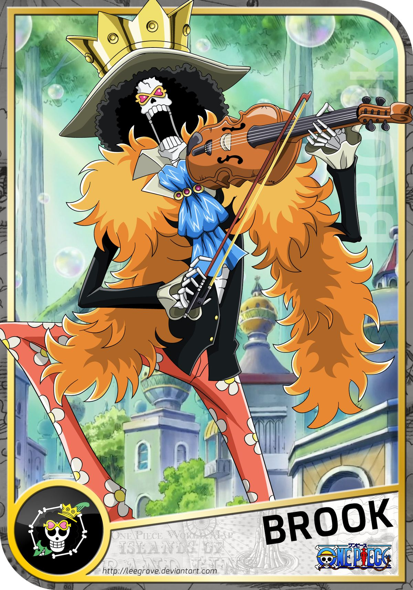

Biography
Brook is a musician with a strange fate: he returned from death by a Devil Fruit and now travels as a living skeleton. His music carries longing and memory; he plays not just to entertain but to stitch together fragments of history and sorrow. Despite his macabre appearance, his personality is gentle and wise.
Role in the Story
Brook lends the crew humor, culture, and a haunting knowledge of past losses; his songs open doors that swords cannot.
Contribution to Plot
His music calms allies and unsettles enemies; and his mysterious past connects to lost narratives that shift the story’s historical stakes.
